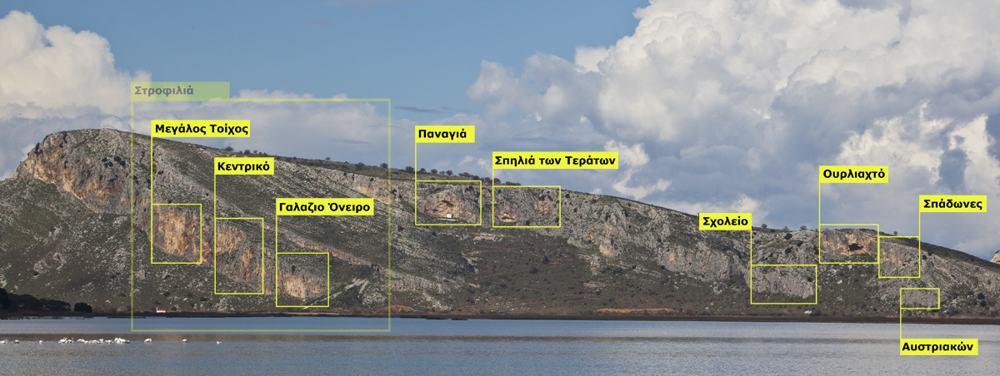
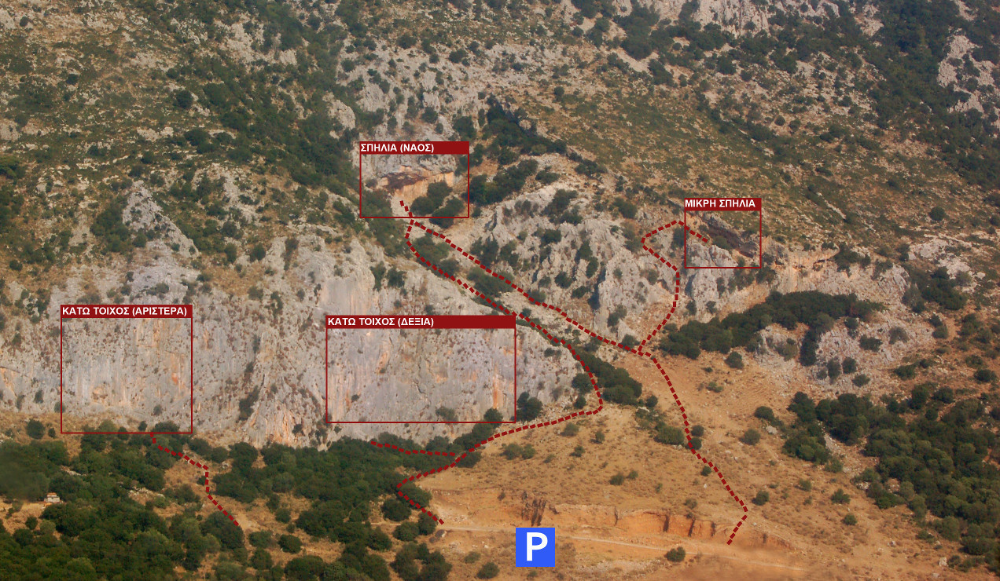

1 Αλεποχώρι - Σπαρτιά
1.1 Περιγραφή
Το Αλεποχώρι (ή Αλποχώρι) είναι ένα χωριουδάκι στους πρόποδες του Ερυμάνθου, σε υψόμετρο 530 μέτρων. Το όνομά του προέρχεται από το μυθικό βασιλιά Άλπη ή το γίγαντα Άλπο. Το πεδίο ανοίχτηκε το 1994, με πρώτες διαδρομές τη Σταλακτιτική συνουσία (7c) και την Πορνόγκραφι (7c+) από τον Γ. Τορέλλι και σταδιακά αναπτύχθηκε σε δημοφιλή αναρριχητικό προορισμό.
Υπάρχουν έξι τομείς στο Αλεποχώρι και ένας στη πολύ κοντινή Σπαρτιά:
- Σπηλιά
- Αλπεός
- Δυτικό ζωνάρι - Κάτω
- Δυτικό ζωνάρι - Πάνω
- Ανατολικό ζωνάρι - Δεξιά
- Ανατολικό ζωνάρι - Αριστερά
- Σπαρτιά
1.1.1 Πρόσβαση
Το Αλεποχώρι απέχει 50 λεπτά από την Πάτρα. Ακολουθείτε την εθνική οδό 111 από Πάτρα προς Τρίπολη και στο 24ο χιλιόμετρο στρίβετε αριστερά προς Αλεποχώρι. Ακολουθείτε τον επαρχιακό δρόμο που καταλήγει στο Αλεποχώρι. Πριν φτάσετε στο χωριό συναντάτε τους τέσσερις πρώτους τομείς (τα δυτικά ζωνάρια βρίσκονται στα αριστερά του δρόμου, η σπηλιά πάνω στο δρόμο και ο Αλπεός δεξιά της σπηλιάς στο ποτάμι). Για το ανατολικό ζωνάρι, στη διασταύρωση ακριβώς πριν τη γέφυρα στην είσοδο του χωριού, στρίψτε αριστερά πάνω. Για τη σπηλιά της Σπαρτιάς περνάτε μέσα από το Αλεποχώρι. Δυο χιλιόμετρα μετά, στην έξοδο της Σπαρτιάς, συναντάτε τη σπηλιά στα αριστερά. Με δυο λεπτά περπάτημα βρίσκεστε στη σπηλιά.
1.1.2 Συνθήκες
Το Αλεποχώρι έχει τομείς για όλα τα επίπεδα αναρριχητών. Περιλαμβάνει δυσκολίες από 5c ως 8a+. Τα δυτικά ζωνάρια σκαρφαλώνονται από τον Οκτώβριο ως τον Απρίλιο, ειδικά τις ηλιόλουστες μέρες του χειμώνα. Τα ανατολικά ζωνάρια αντίστοιχα είναι φιλόξενα από την άνοιξη ως το φθινόπωρο.
1.2 Σπηλιά
Η σπηλιά βρίσκεται ακριβώς πάνω στο δρόμο όπου μπορούμε να παρκάρουμε για να πάμε και στα διπλανά πεδία, Αλπεός, και Δυτικό ζωνάρι κάτω και πάνω. Ανάλογα με την εποχή η σπηλιά οι ντόπιοι κτηνοτρόφοι χρησιμοποιούν τη σπηλιά για να αποθηκεύσουν χορτάρι.
| Όνομα | Βαθμός | Ύψ. | Χαράκτης | |
|---|---|---|---|---|
| 1. | Η χειρότερη | 7a+ | 30μ | Ποταμούσης |
| 2. | Βασιλιάς της σκόνης | 6c/6c+ | 30μ | Τορέλλι |
| 3. | Δαίμονας | 8a/8a+ | 25μ | Τορέλλι |
| 4. | Σαμψών | 8a+ | 20μ | Τορέλλι |
| 5. | Βρυκόλακας | 8a | 20μ | Τορέλλι |
| 6. | Ψόφιο αρνί | 8a+ | 25μ | Τορέλλι |
1.3 Αλπεός
Απέναντι από τη σπηλιά, περνώντας το ποτάμι βρίσκονται οι αναρριχητικές διαδρομές του Αλπεού.
| Όνομα | Βαθμός | Ύψ. | Χαράκτης | |
|---|---|---|---|---|
| 1. | Πρίσμα | 6a | 20μ | Τορέλλι |
| 2. | Εσπρεσίλακας | 6a+ | 20μ | Τορέλλι |
| 3. | Κόμπρα | 6c | 20μ | Τορέλλι |
| 4. | Χιμπατζής | 7b | 25μ | Τορέλλι |
| 5. | Ψοφίμι | 7b+ | 25μ | Τορέλλι |
| 6. | Στήλη άλατος | 7a+ | 28μ | Τορέλλι |
| 7. | Αλπεός | 7c+ | 28μ | Τορέλλι |
| 8. | Ηρακλής | 7b+ | 28μ | Τορέλλι |
| 9. | Ερυμάνθιος κάπρος | 7a+ | 28μ | Τορέλλι |
| 10. | Σαύρα | 6c+ | 30μ | Τορέλλι |
| 11. | Πύθωνας | 7c | 25μ | Τορέλλι |
| 12. | Πρεμιέρα | 7a+ | 25μ | Ξ. Παλιός |
1.4 Δυτικό ζωνάρι - Κάτω
Λίγο πριν τη σπηλιά, στα αριστερά φαίνεται ανηφορίζει από την άσφαλτο ένας κακός χωματόδρομος που φράσσεται από ένα μεταλλικό πλέγμα. Ανεβαίνουμε με τα πόδια για λίγες δεκάδες μέτρα και έπειτα στρίβουμε αριστερά. Ακόμη και αν δεν βρούμε μονοπάτι, το πεδίο είναι πολύ κοντά και εύκολα προσβάσιμο. Έχει μερικές από τις πιο ιστορικές και εντυπωσιακές διαδρομές του πεδίου. Ενδείκνυται για σκαφάλωμα στον χειμωνιάτικο ήλιο. Όταν όμως ζεστάνει ο καιρός, το σκαρφάλωμα είναι δυνατό μόνο το πρωί.
Δυστυχώς τον τελευταίο καιρό ο βοσκός έχει φράξει την πρόσβαση στη σπηλιά.
| Όνομα | Βαθμός | Ύψ. | Χαράκτης | |
|---|---|---|---|---|
| 1. | Οργόνη | 7c | 20μ | Θανόπουλος |
| 2. | The Final Papar | 6b+ | 20μ | Θανόπουλος |
| 3. | Φεγγαρόπετρα | 6c+ | 30μ | Τορέλλι |
| 4. | Τραγοπόδαρος | 6c | 22μ | Τορέλλι |
| 5. | Λύτρωση | 7c | 28μ | Τορέλλι |
| 6. | Λείψανο | 7c | 28μ | Τορέλλι |
| 7. | Σταχτερή | 7b+ | 28μ | Τορέλλι |
| 8. | Σβαρνίστρα | 7a+ | 30μ | Τορέλλι |
| 9. | Ερμής | 7c | 28μ | Τορέλλι |
| 10. | Χρυσαφένια | 7c+ | 30μ | Θανόπουλος |
| 11. | Χρυσαλλίδα | 8a | 30μ | Τορέλλι |
| 12. | Turbo booster | 7c+ | 25μ | Θανόπουλος |
| 13. | Σταλακτιτική συνουσία | 7c | 30μ | Τορέλλι |
| 14. | Πορνόγκραφι | 7c+ | 35μ | Τορέλλι |
| 15. | Παίξε γέλασε | 7b+ | 30μ | Τορέλλι |
| 16. | Στύγα | 8a | 12μ | Τορέλλι |
| 17. | Βεελζεβούλ | 7b+ | 12μ | Θανόπουλος |
| 18. | Πιθηκάνθρωπος | 7b+ | 15μ | Θανόπουλος |
| 19. | Αίθων | 7b+ | 30μ | Τορέλλι |
| 20. | Prohibition | 7c+ | 30μ | Θανόπουλος |
| 21. | Τεθρέας | 7c | 40μ | Τορέλλι |
| 22. | Αγριώπη | 7a+/7b | 15μ | Τορέλλι |
| 23. | Γκουρού | 8a+ | 13μ | Τορέλλι |
| 24. | Σκνίπα | 8a | 13μ | Τορέλλι |
| 25. | Σκούμπυ Ντου | 7c+ | 13μ | Τορέλλι |
| 26. | Μαραμπού | ? | 13μ | Θανόπουλος |
| 27. | Νυφίτσα | 7b+ | 10μ | Τορέλλι |
| 28. | Κουκουρούκου | 8a+ | 10μ | Τορέλλι, Θανόπουλος |
| 29. | Αστραπή | 7c/+ | 10μ | Τορέλλι |
| 30. | Βίτσιο | 40μ | ||
| 1η σχοινιά | 6a+ | Τορέλλι | ||
| 2η σχοινιά | 6c | Τορέλλι | ||
| 31. | Μάρκο Πόλο | 35μ | ||
| 1η σχοινιά | 6a | Θανόπουλος | ||
| 2η σχοινιά | 7a | Θανόπουλος | ||
| 32. | Φωλιά του αετού | 60μ | ||
| 1η σχοινιά | 6a+ | Θανόπουλος | ||
| 2η σχοινιά | 6b | Θανόπουλος | ||
| 3η σχοινιά | 6c | Θανόπουλος | ||
| 33. | Super mini | 7a+ | 12μ | Θανόπουλος |
| 34. | Μέγας Αλέξανδρος | ? | Θανόπουλος |
1.5 Δυτικό ζωνάρι - Πάνω
Το πάνω ζωνάρι είναι το πιο νέο το Αλεποχωρίου. Βρίσκεται περίπου δέκα λεπτά πιο πάνω από το κάτω ζωνάρι.

| Όνομα | Βαθμός | Ύψ. | Χαράκτης | |
|---|---|---|---|---|
| 1. | Μαύρη μαγεία | 7c | 20μ | |
| 2. | Πίσσα και Πούπουλα | 7b+ | 30μ | Θανόπουλος/Τορέλλι |
| 3. | Belladona | 7b | 35μ | Τορέλλι |
| 4. | Yerba Mate | 7c | 35μ | Σωτηρόπουλος |
| 5. | Marijuana | 8a | 35μ | Σωτηρόπουλος |
| 6. | Crataegus | 7c+ | 30μ | Σωτηρόπουλος |
| 7. | Marijuana στοπ | 7b+ | 35μ | Τορέλλι |
| 8. | Πρότζεκτ | 35μ | Σωτηρόπουλος | |
| 9. | Πάνας | 7c+ | 20μ | Τορέλλι |
| 10. | Θείο τραγί | 7a+ | 25μ | Τορέλλι |
| 11. | Μανδραγόρας | 7b+ | 35μ | Θανόπουλος |
| 12. | Γυναίκα, μπικίνι, τραγικό | 7b | 35μ | Τορέλλι |
| 13. | Φλωμίς | 7b | 25μ | Τορέλλι |
1.6 Ανατολικό ζωνάρι - Δεξιά
Το ανατολικό ζωνάρι είναι αρκετά δημοφιλές για τα απογεύματα του καλοκαιριού, όταν μπαίνει στη σκιά. Έχει μια σειρά από εύκολες διαδρομές γύρω στο 5c-6b+ και προσελκύει και νέους ή πιο ευκαιριακούς αναρριχητές. Στις διαδρομές αυτές ο βράχος είναι κάπως κοφτερός, εξού και τα χαρακτηριστικά ονόματα “Βελονοφοβία”, “Τσίμπημα”, “Δάγκωμα” κλπ.
Αφού περάσουμε τη σπηλιά, καθώς πλησιάζουμε στο Αλεποχώρι, συναντούμε μια γέφυρα που πηγαίνει δεξιά πάνω από το ποτάμι. Εκεί, πριν τη γέφυρα, στρίβουμε δεξιά και παίρνουμε τον ανηφορικό δρόμο. Στα πρώτα μέτρα έχει τσιμέντο, αλλά έπειτα γίνεται βατός χωματόδρομος. Μετά από μερικές στροφές, παρκάρουμε σε ένα χαρακτηριστό πλάτωμα μιας δεξιάς φουρκέτας που χωράει 4-5 αυτοκίνητα. Από το πάρκινγκ το μονοπάτι θα πρέπει να είναι εμφανές ανάμεσα στους κατσικόδρομους, καθώς έχει πρόσφατα σημειωθεί με κόκκινη μπογιά. Περπατάμε χωρίς να κερδίζουμε ιδιαίτερο ύψος και μετά από 3-4 λεπτά βρισκόμαστε στο πεδίο.
| Όνομα | Βαθμός | Ύψ. | Χαράκτης | |
|---|---|---|---|---|
| 1. | Κοντή | 7a+ | 10μ | Τορέλλι |
| 2. | Αγρια μέντα | 7c | 20μ | Τορέλλι |
| 3. | Προδότης | 7c | 20μ | Τορέλλι |
| 4. | Δέρμα φιδιού | 7a+ | 22μ | Τορέλλι |
| 5. | Μητσόγκονας | 6b | 20μ | Τορέλλι |
| 6. | Αρχιεπίσκοπος | 6b+ | 20μ | Τορέλλι |
| 7. | Σακοράφα | 6b | 15μ | Τορέλλι |
| 8. | ? | 6c | 20μ | Καρύμπαλης |
| 9. | Γής μαδιάμ | 6a | 20μ | Φραγκουλιας/Καρύμπαλης |
| 10. | Ούρτ! | 6b+ | 20μ | Τορέλλι |
| 11. | Πυθαγόρειο θεώρημα | 6b+ | 20μ | Θανόπουλος |
| 12. | Project | Θανόπουλος | ||
| 13. | Εxtremista | 7c+ | 20μ | Θανόπουλος |
| 14. | Born slippy | 7b | 25μ | Θανόπουλος |
| 15. | Αραχνοπόδαρος | 6c+ | 20μ | Τορέλλι |
| 16. | Μπαρμπα-Ντίνος | 7a | 20μ | Θανόπουλος |
| 17. | Καλή θέα | 6a+ | 20μ | Πιλάλης |
| 18. | Cuore Sportivo | 6a+ | 20μ | Κινατίδης |
| 19. | Βελονισμός | 5c | 20μ | Τορέλλι |
| 20. | Βελονοθήκη | 6a+ | 15μ | Τορέλλι |
| 21. | Βελονοφοβία | 6a | 15μ | Τορέλλι |
| 22. | Τσίμπημα | 5c | 15μ | Τορέλλι |
| 23. | Δάγκωμα | 5c | 15μ | Τορέλλι |
| 24. | Η ψηλή | 6c+ | 30μ | Θανόπουλος |
| 25. | Ο ψηλέας με το ακούρευτο μαλί | 6b+ | 30μ | Τορέλλι |
1.7 Ανατολικό ζωνάρι - Αριστερά
Το ανατολικό αριστερό ζωνάρι έχει πολύ καλό βράχο, λιγότερο κοφτερό από το πάνω, αλλά πιο περιπετειώδες σκαρφάλωμα, και με run out. Μάλλον όλες οι διαδρομές είναι πιο δύσκολες απ’ότι είχαν αρχικά δοθεί. Οι ασφάλειες είναι παλιές (κυρίως Aegean) αλλά είναι αξιόπιστες και οι περισσότερες σε πολύ καλή κατάσταση. Σκαρφαλώνεται πολύ πιο σπάνια από ό,τι το δεξί ζωνάρι. Για να φτάσουμε στις διαδρομές συνεχίζουμε το περπάτημα από το δεξί ζωνάρι.
| Όνομα | Βαθμός | Ύψ. | Χαράκτης | |
|---|---|---|---|---|
| 1. | Νεκροθάφτης | 7a+ | 25μ | Τορέλλι |
| 2. | Μαγκούφης | 6a+ | 20μ | Τορέλλι |
| 3. | Σαπίλα | 6b+ | 25μ | Τορέλλι |
| 4. | Ο κουμπάρος | 6a | 25μ | Τορέλλι |
| 5. | Κοκκαλιάρης | 5c | 25μ | Τορέλλι |
| 6. | Mr. Bean | 6b | 20μ | Τορέλλι |
| 7. | Ροχάλα | 6a | 20μ | Τορέλλι |
| 8. | Τρύπα | 6c | 20μ | Τορέλλι |
| 9. | Βραχοτσοπανάκος | 6b | 25μ | Τορέλλι |
| 10. | Γορίλας | 5b | 18μ | Τορέλλι |
| 11. | Φάντασμα | 6a | 18μ | Τορέλλι |
| 12. | Νάνος | 5c | 18μ | Τορέλλι |
| 13. | Σχισμή του κισσού | 6a | 25μ |
1.8 Σπαρτιά
Η μικρή σπηλιά αμέσως μετά τη Σπαρτιά έχει μερικές εντυπωσιακές διαδρομές. Η σπηλιά βρίσκεται ακριβώς στην έξοδο του χωριού, στα αριστερά όπως ερχόμαστε από το Αλεποχώρι.
| Όνομα | Βαθμός | Ύψ. | Χαράκτης | |
|---|---|---|---|---|
| 1. | ? | |||
| 2. | Μικρός σκορπιός | 6c+ | ||
| 3. | Κουκουβάγια | 7c | ||
| 4. | Καλικάντζαρος | 7a+ | ||
| 5. | Κάμπια | 8b | ||
| 6. | Κοράκι | 8a | ||
| 7. | Γύπας | 8b | ||
| 8. | Κόνδορας | 8a+(?) | ||
| 9. | Πραξικόπημα | 7c/7c+ | ||
| 10. | Έκτη αίσθηση | 7b+ | ||
| 11. | Σκυλοδόντης | 7b |
2 Καλόγρια
2.1 Περιγραφή
Στην περιοχή της Kαλόγριας αναπτύχθηκαν τα πρώτα αναρριχητικά πεδία στην περιοχή της Πάτρας. Βρίσκεται στο νότιο άκρο των Μαύρων Βουνών. Δίπλα από τα πεδία είναι η λιμνοθάλασσα του Προκόπου και στο βάθος το δάσος της Στροφιλιάς, τμήματα ενός εθνικού πάρκου 22.000 στρεμμάτων που προστατεύεται από διεθνείς συνθήκες.
Στην Καλόγρια υπάρχουν πάνω από 80 διαδρομές, οι περισσότερες από τις οποίες είναι αθλητικές. Υπάρχουν όμως και παραδοσιακές διαδρομές με δύο σχοινιές και βαθμολογίες μέχρι 7a. Η Καλόγρια έχει ιδιαίτερη σημασία για την ιστορία της ελληνικής αναρρίχησης. Αρκετές βαθμολογίες έγιναν για πρώτη φορά εδώ στην Ελλάδα.
Υπάρχει αρκετή ποικιλία στο σκαρφάλωμα και μεγάλο εύρος δυσκολιών ανάλογα με το πεδίο. Ο βράχος έχει γενικά καλή ποιότητα. Το σκαρφάλωμα γίνεται σε θετικό, κάθετο αλλά και αρνητικό βράχο. Στην Καλόγρια υπάρχει πολύ εύκολο σκαρφάλωμα στις εκπαιδευτικές διαδρομές του «Σχολείου».

Υπάρχουν 8 τομείς
- Στροφιλιά - Μεγάλος Τοίχος
- Στροφιλιά - Κεντρικό
- Στροφιλιά - «Γαλάζιο Όνειρο»
- Παναγιά
- Σπηλιά των τεράτων
- Σχολείο (εκπαιδευτικά)
- Πρόκοπος αριστερά - «Ουρλιαχτό»
- Πρόκοπος δεξιά - «Σπάδωνες»
- Αυστριακών
2.2 Πρόσβαση
Από την Πάτρα το πεδίο απέχει 45 λεπτά. Από την Εθνική Οδό Πατρών - Πύργου στρίβετε δεξιά στο 26ο χιλιόμετρο στην Κάτω Αχαΐα και έπειτα ακολουθείτε το δρόμο προς την παραλία της Καλόγριας, προσπερνώντας τον Άραξο. Το πεδίο είναι στα δεξιά καθώς πλησιάζετε από τον Άραξο προς την παραλία της Καλόγριας.
2.3 Συνθήκες
Η Καλόγρια έχει νότιο προσανατολισμό. Η καλύτερη περίοδος για αναρρίχηση είναι το χειμώνα, από τα τέλη Οκτωβρίου μέχρι τον Μάρτιο. Το καλοκαίρι μόνο στον τομέα «Παναγία» έχει σκιά, μετά τις 16:00, αλλά η ζέστη είναι απαγορευτική.
2.4 Στροφιλιά - Μεγάλος Τοίχος

| Όνομα | Βαθμός | Ύψ. | Χαράκτης | |
|---|---|---|---|---|
| 1. | Ρωγμή | VIII | 28μ | Τορέλλι |
| 2. | Ανώνυμη | |||
| 1η σχοινιά | VII+ | 25μ | Τορέλλι | |
| 2η σχοινιά | VII+ | 35μ | Τορέλλι | |
| 3. | Καρούμπαλος | |||
| 1η σχοινιά | VI- | 25μ | Τορέλλι | |
| 2η σχοινιά | VI+ | 35μ | Τορέλλι | |
| 4. | Άτλαντας | 7a | 40μ | Τορέλλι |
| 5. | Αίολος | |||
| 1η σχοινιά | 7a | 35μ | Τορέλλι | |
| 2η σχοινιά | 7c+ | 35μ | Τορέλλι | |
| 5a. | Ασκός | 7c | 35μ | Τορέλλι |
| 6. | Σίσυφος | 50μ | ||
| 1η σχοινιά | 7a+ | Τορέλλι | ||
| 2η σχοινιά | 7b+ | Τορέλλι | ||
| 7. | Αυγό του φιδιού | 50μ | ||
| 1η σχοινιά | 6a | Θανόπουλος | ||
| 2η σχοινιά | 7b+ | Θανόπουλος | ||
| 8. | Λευκή μαγεία | 8a+ | 50μ | Θανόπουλος |
| 9. | Περσεφόνη | |||
| 1η σχοινιά | VI- | 35μ | Θανόπουλος | |
| 2η σχοινιά | VII+ | 35μ | Θανόπουλος | |
| 10. | Πυθέας | VIII | 25μ | Τορέλλι |
| 11. | Ποσειδώνας | 7b+ | 35μ | Θανόπουλος |
| 12. | Ήφαιστος | |||
| 1η σχοινιά | 7b+ | 30μ | Τορέλλι | |
| 2η σχοινιά | 7b | 30μ | Τορέλλι | |
| 13. | Φαραώ | |||
| 1η σχοινιά | VI- | 30μ | Μπουγιουκλού, Τορέλλι | |
| 2η σχοινιά | VI | 30μ | Μπουγιουκλού, Τορέλλι | |
| 14. | Σαλώμη | |||
| 1η σχοινιά | VI- | 30μ | Καραβέλας, Χατζηγεωργίου | |
| 2η σχοινιά | VI | 30μ | Καραβέλας, Χατζηγεωργίου | |
| 15. | Φέρετρο | 60μ | ||
| 1η σχοινιά | V | Τορέλλι | ||
| 2η σχοινιά | VIII- | Τορέλλι |
2.5 Στροφιλιά - Κεντρικό
| Όνομα | Βαθμός | Ύψ. | Χαράκτης | |
|---|---|---|---|---|
| 1. | Συμπόσιο | VI+ | 60μ | Θεοδωρόπουλος, Mπουγιούκος |
| 2. | Φέρετρο | 60μ | (ασφ. 0/3) | |
| 1η σχοινιά | V | Τορέλλι | ||
| 2η σχοινιά | VIII- | Τορέλλι | ||
| 3. | Χλωμό φεγγάρι | 60μ | (ασφ. 0/3) | |
| 1η σχοινιά | V+ | Τορέλλι, Θανόπουλος | ||
| 2η σχοινιά | VII+ | Τορέλλι, Θανόπουλος | ||
| 4. | Καραμέλα | VII+ | 50μ | Kαράβελας, Γιανακόπουλος |
| 5. | Έκλειψη | IV+ | 50μ | Τιτόπουλος, Μπουγιούκος, Καραβέλας |
| 6. | Λυκάνθρωπος | VII+ | 50μ | Τορέλλι, Σολιδάκης |
| 7. | Σεμινέ | VI+ | 50μ | Κορρές, Μπουγιούκος |
| 8. | Άραξε | VI+ | 60μ | Αλιγιάννης, Δήμου |
2.6 Στροφιλιά - «Γαλάζιο Όνειρο»
| Όνομα | Βαθμός | Ύψ. | Χαράκτης | |
|---|---|---|---|---|
| 1. | Κουφάλα | 7b+ | 28μ | Τορέλλι |
| 2. | Μενίρ | 5c | 20μ | |
| 3. | Οβελίξ | VI | 35μ | Τορέλλι |
| 4. | Αστερίξ | VI+ | 35μ | Τορέλλι |
| ? | 7a | 25μ | ||
| 5. | Κοράλλι | 8a/+ | 18μ | Τορέλλι |
| ? | 6b | 25μ | ||
| 6. | Υδροχόος | VII- | 30μ | Τορέλλι / Θανόπουλος |
| 7. | Δαίδαλος | VI+ | 35μ | Τορέλλι |
| 8. | Λούκυ Λουκ | 6c+ | 35μ | Τορέλλι |
| 9. | Λευκός θάνατος | 7c+ | 25μ | Τορέλλι / Θανόπουλος |
| 10. | ? | prj | 25μ | Θανόπουλος |
| 11. | Σταλακτίτης | 7b+ | 25μ | Τορέλλι / Θανόπουλος |
| 12. | Απέραντο γαλάζιο | 7b+ | 25μ | Θανόπουλος |
| 13. | Γαλάζιο όνειρο | 7b/+ | 25μ | Τορέλλι |
| 14. | Κουφόβραση | 7b+ | 25μ | Τορέλλι |
| 15. | Μπαομπάπ | 6a+ | 20μ | Τορέλλι |
Ακριβώς αριστερά και δεξιά από το Κοράλλι υπάρχουν δύο σχετικά νέες σπορ διαδρομές.
2.7 Παναγιά

| Όνομα | Βαθμός | Ύψ. | Χαράκτης | |
|---|---|---|---|---|
| 1. | Άνευ όρων | 7b+ | 23μ | Τορέλλι |
| 2. | Ζωή εν τάφω | 6c+ | 26μ | Τορέλλι |
| 3. | Φρίκη | VIII- | 27μ | Τορέλλι / Θανόπουλος |
| 4. | Ιεροσυλία | |||
| 1η σχοινιά | 7b+/c | 15μ | Τορέλλι / Θανόπουλος | |
| 2η σχοινιά | 7c+ | 35μ | Τορέλλι / Θανόπουλος | |
| 5. | Ιερά εξέταση | 8a+ | 33μ | Θανόπουλος |
| 6. | Aβάπτιστη | Τορέλλι | ||
| 7. | Αιμοκάθαρση | |||
| 1η σχοινιά | 6a | 12μ | Τορέλλι | |
| 2η σχοινιά | 7c+ | 35μ | Τορέλλι | |
| 8. | Αιμοκάθαρση direct | 8a | 35μ | Τορέλλι |
| 9. | Ταφόπλακα | 7c+ | 30μ | Τορέλλι / Θανόπουλος |
| 10. | Ο χορός των νεκρών | 8a | 25μ | Τορέλλι |
| 11. | Μετά θάνατον | 8a | 25μ | Τορέλλι |
| 12. | Βραχομανία | 6b+ | 25μ | Τορέλλι |
| 13. | Ύαινα | 6c | 15μ | Θανόπουλος |
2.8 Σπηλιά των τεράτων

| Όνομα | Βαθμός | Ύψ. | Χαράκτης | |
|---|---|---|---|---|
| 1. | Μέδουσα | 7b/+ | 22μ | Τορέλλι |
| 2. | Κέρβερος | 8a+ | 20μ | Τορέλλι |
| 3. | Σειρήνα | 8b | 12μ | Τορέλλι |
| 4. | Σκύλλα | ? | 12μ | Τορέλλι |
| 5. | Τυφών | 7c+ | 12μ | Τορέλλι |
| 6. | Χίμαιρα | 7c+ | 18μ | Τορέλλι |
| 7. | Αιγίς | 7c+ | 16μ | Τορέλλι |
| 8. | Μέγαιρα | 8a+ | 16μ | Τορέλλι |
| 9. | Ερινύα | 7b+ | 25μ | Τορέλλι |
| 10. | Εχίδνα | 7c+ | 25μ | Τορέλλι |
| 11. | Πειραματόζωο | 6b | 25μ | Τορέλλι |
| 12. | Κουασιμόδος | VI- | 25μ | Θανόπουλος |
2.9 Σχολείο (εκπαιδευτικά)

| Όνομα | Βαθμός | Ύψ. | Χαράκτης | |
|---|---|---|---|---|
| 1. | Αβάπτιστη | 6a | Φραγκούλιας | |
| 2. | Αβάπτιστη | 6a+ | Φραγκούλιας | |
| 3. | Ζιγκ-ζαγκ | V | 30μ | Κελέκης, Καράβελας |
| 4. | Μπακατέλα | IV+ | 30μ | Μπρούτζος, Bagatella, Κελέκης |
| 5. | Αναποδιά | V | 30μ | Καράβελας, Πουλημένος |
| 6. | Σπουδή | IV+ | 30μ | Τορέλλι |
| 7. | Το Μπερνουλι | 6a | Φραγκούλιας | |
| 8. | Ακρίδα | 5c | 25μ | Τορέλλι |
| 9. | Διάρροια | 6a+ | 25μ | Ορφανουδάκης |
| 10. | Χέσε (Ανα)μέσα | 6b | 25μ | Τασίκας |
| 11. | Δυσκοιλιότητα | 6a | 25μ | Ορφανουδάκης |
| 12. | Τσιμπούρι | 6a | 25μ | Τορέλλι |
| 13. | Κουνούπι | 5b | 20μ | Τορέλλι |
| 14. | Τζιτζίκι | 5a | 20μ | Τορέλλι |
| 15. | Μυρμήγκι | 4c | 20μ | Τορέλλι |
| 16. | Ψείρα | 4c | 20μ | Τορέλλι |
| 17. | Ψύλλος | 5a | 20μ | Τορέλλι |
| 18. | Νίνιος | V | 25μ | Μπρούτζος, Νίνιος, Λάφη |
2.10 Πρόκοπος αριστερά - «Ουρλιαχτό»
| Όνομα | Βαθμός | Ύψ. | Χαράκτης | |
|---|---|---|---|---|
| 1. | Kόψη | 6c | Καρύμπαλης, Γερόλυμος | |
| 2. | Yψηλάντης | 6b | Φραγκούλιας | |
| 3. | Kαμάρι | 6a | Φραγκούλιας | |
| 4. | Ψυχαναλυτής | 6a+ | Καρύμπαλης, Γερόλυμος | |
| 5. | Ονειροπόλος | 6b | Καρύμπαλης, Γερόλυμος | |
| 6. | Αχόρταγος | 6b+ | Καρύμπαλης, Γερόλυμος | |
| 7. | Κλωθώ | 6c+ | 30μ | Τορέλλι |
| 8. | Λάχεσις | 6b+ | 30μ | Τορέλλι |
| 9. | Ξεδιάντροπος | 6c | Καρύμπαλης, Γερόλυμος | |
| 10. | Άτροπος | 7a | Σωτηρόπουλος |
| Όνομα | Βαθμός | Ύψ. | Χαράκτης | |
|---|---|---|---|---|
| 11. | Ουρλιαχτό | 7c | 20μ | Τορέλλι |
| 12. | Ουρλιαχτό Ext. | 7c+ | 30μ | Τορέλλι |
| 13. | Destroy all trains | |||
| 1η σχ.(Destroy all) | ? | 15μ | Θανόπουλος | |
| 2η σχ. (13+12) | 8a+ | 30μ | Θανόπουλος | |
| 14. | Destroy all brains | 8b | Θανόπουλος | |
| 15. | Ουράνιος θόλος | 8a+ | 20μ | Τορέλλι |
| 16. | Sex machine | |||
| 1η σχ. | 8a | 17μ | Θανόπουλος | |
| 2η σχ.(Sex Bomb) | 8a/+ | 25μ | Τορέλλι | |
| 17. | Νέμεσις | 7c | 30μ | Τορέλλι |
| 18. | Piazza Espresso | VIII+ | 20μ | Τορέλλι |
2.11 Πρόκοπος δεξιά - «Σπάδωνες»

| Όνομα | Βαθμός | Ύψ. | Χαράκτης | |
|---|---|---|---|---|
| 1. | Καβαλημένο Καλάμι | VII- | 30μ | Τορέλλι |
| 2. | Αιγόκερως | 7c | 30μ | Τορέλλι |
| 3. | Κλείδα | 7b | 30μ | Τορέλλι |
| 4. | Κλεοπάτρα | |||
| 1η σχοινιά | 5b | 15μ | Μπρούτζος, Αποστόλου | |
| 2η σχοινιά | 6a+ | 35μ | Μπρούτζος, Αποστόλου | |
| 5. | Ανώνυμη | 5b | 15μ | |
| 6. | Super Mario | |||
| 1η σχοινιά | 5b | 15μ | Τορέλλι | |
| 2η σχοινιά | 6b+ | 35μ | Τορέλλι | |
| 7. | Σπάδωνες | |||
| 1η σχοινιά | 5a | 15μ | Μπρούτζ,Kαραβέλας,Xατζηγεωρ. | |
| 2η σχοινιά | 6a | 35μ | Μπρούτζ,Kαραβέλας,Xατζηγεωρ. | |
| 8. | Διεδρικότητα | 6b+ | 30μ | Καρύμπαλης |
| 9. | Buckethead | |||
| 1η σχοινιά | 5c | 15μ | Καρύμπαλης | |
| 2η σχοινιά | 6c | 25μ | Καρύμπαλης,Παπαδόπουλος | |
| 10. | Ο προφήτης | 6a | 25μ | Καρυμπαλής/Καγιαυτάκης |
2.12 Αυστριακών

| Όνομα | Βαθμός | Ύψ. | Χαράκτης | |
|---|---|---|---|---|
| 1. | Χωρίς Όνομα | 5a+ | Καρύμπαλης | |
| 2. | Χωρίς Όνομα | 5a | Καρύμπαλης | |
| 3. | Χωρίς Όνομα | 5a+ | ||
| 4. | Χωρίς Όνομα | 5b+ | ||
| 5. | Χωρίς Όνομα | 5a+ | ||
| 6. | Χωρίς Όνομα | 5b | ||
| 7. | Χωρίς Όνομα | 4c |
3 Κλεισούρα
3.1 Περιγραφή
Η Κλεισούρα βρίσκεται στην βορινή έξοδο του φαραγγιού στα Κλεισουρέματα, στο δρόμο μεταξύ Μεσσολογγίου και Αγρινίου. Χαρακτηρίζεται από αρνητικές διαδρομές με μεγάλο ανάπτυγμα.
Υπάρχουν 4 τομείς. Από τα βόρεια, καθώς το πρώτο πεδίο είναι το πιο σημαντικό:
- Κύριο πεδίο (Metropolis). Είναι το πεδίο στη βόρεια έξοδο του φαραγγιού, στα αριστερά όπως πηγαίνετε προς το Αγρίνιο. Πάρκινγκ στο αποκομμένο τμήμα της εθνικής οδού. Προσοχή! Αφήστε το αυτοκίνητο σε σημείο που το βλέπετε από το πεδίο καθώς έχουν σημειωθεί κλοπές.
- Αυστριακών. Το ίδιο πάρκινγκ, αλλά βρίσκεται ψηλά στο πέταλο, αριστερά από το κύριο πεδίο. 15’-20’ περπάτημα.
- Αετοφωλιά. Στο κέντρο του φαραγγιού, ψηλά βράχια, στην ανατολική πλευρά του (στα δεξιά όπως πάμε προς Αγρίνιο).
- Μοναχικός καβαλάρης. Στην ανατολική πλευρά του φαραγγιού, απέναντι περίπου από την εκκλησία.
3.2 Πρόσβαση
Το πεδίο απέχει 1 ώρα από την Πάτρα. Από το Αντίρριο ακολουθείτε το δρόμο προς Αγρίνιο. Στον κόμβο της Ιόνιας Οδού στο Κεφαλόβρυσο ακολουθείτε την παλιά εθνική οδό. Στη βορινή έξοδο από το φαράγγι υπάρχει πάρκινγκ στην αριστερή πλευρά του δρομου. Το πάρκινγκ είναι ένα παλιό τμήμα της εθνικής οδού προς Αγρίνιο που δεν χρησιμοποιείται πια. Η στροφή για το πάργκινγκ φαίνεται την τελευταία στιγμή και χρειάζεται προσοχή λόγω της περιορισμένης ορατότητας. Με λιγότερο από πέντε λεπτά περπάτημα φτάνετε στο πεδίο.
3.3 Συνθήκες
Ο κύριος τομέας βρίσκεται στην αριστερή πλευρά του φαραγγιού και έχει ανατολικό προσανατολισμό. Είναι κατάλληλος για αναρρίχηση μετά το μεσημέρι και προτιμάται το φθινόπωρο και την άνοιξη. Το καλοκαίρι συνήθως αποφεύγεται λόγω της ζέστης ενώ το χειμώνα ο μόνος περιορισμός είναι τα νερά έπειτα από συνεχόμενες μέρες βροχής.
3.4 Κύριο πεδίο (Metropolis)
| Όνομα | Βαθμός | Ύψ. | Χαράκτης | |
|---|---|---|---|---|
| 1. | Interstellar | 8a+ | 33μ | Θανόπουλος |
| 1x. | Interstellar Overdrive | 8b | 45μ | Θανόπουλος |
| 2. | Klingon | 6c+/7a | 20μ | Θανόπουλος |
| 2x. | Starship Enterprise | 8b | 35μ | Θανόπουλος |
| 3. | Space Invaders | 8b | 25μ | Θανόπουλος |
| 4. | Crystal Method | 7a+ | 17μ | Λάππας |
| 4x. | Crystallization | 8b | 35μ | Θανόπουλος |
| 5. | Space Cake | 8a | 25μ | Θανόπουλος |
| 6. | Dip samou nara | 6b+ | 20μ | Λάππας |
| 7. | Pina Colara | 6b | 20μ | Λάππας |
| 8. | Πτυχιούχος | 6c | 23μ | Τορέλλι |
| 8x. | Στεγόσαυρος | 8a | +10μ | Θανόπουλος |
| 8xx. | Στεγόσαυρος Rex | 8c | +10μ | Θανόπουλος |
| 8xxx. | Αγράμματος | 7a+ | 22μ | Λάππας |
| 9. | G-spotting | 7b+ | Θανόπουλος | |
| 10. | Colonette rider | 6b | Λάππας | |
| 11. | Κόμπρα (?) | – | – | Τορέλλι |
| 12a. | Armadillo | 7a | 22μ | Λάππας - Θανόπουλος |
| 12b. | Μέλας ζωμός | 7b+/c | 22μ | Θανόπουλος |
| 12c. | Αρχιτούθις | 8a/+ | +25μ | Θανόπουλος |
| 13. | Σεξάρτηση | 6c+ | 20μ | Λάππας |
| 13x. | Planet Arrakis | 7c+ | 40μ | Θανόπουλος |
| 14. | Via del Popolo | 6b+ | 20μ | Θανόπουλος |
| … | Via del Kokalo | 6a+ | 20μ | Λάππας |
| 14x. | Illuminatus | 8b+ | +20μ | Θανόπουλος |
| 14xx. | (to be continued) | ++ | ||
| 15. | Φαλακροdeamon | 8b+ | 35μ | Θανόπουλος |
| 16. | Yellow submarine | 7b | 17μ | Θανόπουλος |
| 16x. | Ride the black snake | 8b | +15m | Θανόπουλος |
| 17. | Και ο zoro ζορίζεται | 7b+ | 17μ | Λάππας |
| 17x. | ? | ? | +15μ | Λάππας |
| 18. | Πιτς φυτίλι | 7c | 25μ | Λάππας |
| 19. | Χαραμαδόμπεης | IX | 25μ | Τορέλλι |
| 20. | ?? | 7b | 20μ | Θανόπουλος |
| 20x. | ?? | +? | Θανόπουλος | |
| 21. | Γλυκιά ηδονή | 8a+ | 15μ | Τορέλλι |
| 22. | Πιστολέρο | 8b | 28μ | Θανόπουλος |
| 23. | Ωχρά σπειροχαίτη | 8a/+ | 32μ | Θανόπουλος |
| 23x. | Σύφιλη | 7c | 32μ | Θανόπουλος |
| 24. | Cocodrila | 7a | 26μ | Θανόπουλος |
| 24x. | Cocodrillo Grande | 7b | 34μ | Θανόπουλος |
| 25. | Rezous αρνητικό | 8a+/8b | 32μ | Τορέλλι |
| 26. | Κάφρομαν | 8b/+ | 33μ | Θανόπουλος |
| 27. | Η ρίζα του Κακού | 8b | 30μ | Θανόπουλος |
| 27x. | To Κακό | (8c++) | 33μ | Θανόπουλος |
| 28. | Σεμινάριο | ? | 25μ | Τορέλλι |
| 29. | Space Oddity | project | 25μ | Θανόπουλος |
| 30. | Double Penetration | 8a | 25μ | Θανόπουλος |
| 30x. | Gang Bang | 8c | 35μ | Θανόπουλος |
| 31. | Kid Loco | 7a | 15μ | Θανόπουλος |
| 31x. | Hombre-Solo | 7c+/8a | 22μ | Θανόπουλος |
| 31xx. | Hombre Loco | 8a+/8b | 30μ | Θανόπουλος |
| 32. | Γουρουνομπέης | 8b/8b+ | 25μ | Θανόπουλος |
| 33. | Dr. Pinch & Mr. Hook | ?? | 25μ | Θανόπουλος |
| 34. | Αιματορουφήχτρα | 8b | 27μ | Τορέλλι |
| 35. | Τον έλεγαν Τανάλια | (8c/+?) | 28μ | Θανόπουλος |
| 36. | Αιμόπτυση(?) | (8b?) | 26μ | Τορέλλι |
| 37. | ? | 8a? | 20m | Τορέλλι |
3.5 Αυστριακών
| Όνομα | Βαθμός | Ύψ. | Χαράκτης | |
|---|---|---|---|---|
| 1. | ? | 7a+ | 35μ | |
| 2. | ? | 8b(?) | 35μ | |
| 3. | ? | 7c(?) | ||
| 4. | ? | |||
| 5. | ? |
3.6 Αετοφωλιά
Στις διαδρομές έχουν φωλιές τα όρνια της περιοχής. Οι διαδρομές δεν σκαρφαλώνονται, καθώς αμέσως μετά το άνοιγμα, η Ορνιθολογική Εταιρεία επισήμανε πως είναι πολύ μεγάλος ο κίνδυνος να τρομάξουν τα πουλιά και να μην επιστρέψουν ξανά στις φωλιές τους.
| Όνομα | Βαθμός | Ύψ. | Χαράκτης | |
|---|---|---|---|---|
| 1. | Σχισμή | VII+ | Τορέλλι | |
| 2. | Κάθοδος | 7c | Τορέλλι | |
| 3. | Βόας | 8a | Τορέλλι | |
| 4. | (…) | 7c+ | Τορέλλι |
3.7 Μοναχικός καβαλάρης
| Όνομα | Βαθμός | Ύψ. | Χαράκτης | |
|---|---|---|---|---|
| 1. | Μοναχικός καβαλάρης | 7c(?) | Θανόπουλος |
4 Πόρτες (Νεραϊδότρυπα)
Το πεδίο που μοιάζει να βρίσκεται σε κρατήρα και έχει δυναμικό για μεγάλες και αρνητικές διαδρομές πολλών σχοινιών. Πήρε το όνομά του από το χωριό που βρίσκεται λίγο πιο κάτω. Βρίσκεται κοντά σε μια μικρή εκκλησία και η ύπαρξη του δεν είναι εμφανής από το δρόμο. Οι ντόπιοι το ονομάζουν Νεραϊδότρυπα.
Μέχρι τώρα υπάρχουν 11 διαδρομές σπορ χαρακτήρα, οι 5 από τις οποίες έχουν 35-45 μέτρα ύψος. Υπάρχουν και 6 παραδοσιακές γραμμές στα αριστερά της σπηλιάς. Παρότι οι διαδρομές έχουν καθαριστεί, μπορεί να σπάσουν πιασίματα ή τούφες.
Το μέρος έχει μοναδική ομορφιά. Όμως, είναι ουσιαστικά μια τρύπα στη γη και είναι αρκετά σκοτεινό. Δεν έχει ζώα (γιατί δεν μπορούν να μπουν και να βγουν), μόνο βατράχια όταν βρέχει και κοράκια. Αν είστε κλειστοφοβικοί ίσως να μην είναι το κατάλληλο πεδίο.
Υπάρχουν 4 τομείς. Μόλις κατεβούμε από τη μεταλλική σκάλα, ξεκινώντας από αριστερά είναι με τη σειρά:
- Τοίχος πάνω αριστερά
- Τοίχος αριστερά - παραδοσιακές
- Τοίχος αριστερά - κάτω δεξιά κομμάτι
- Τοίχος δεξιά, από τη σκάλα βρίσκεται στην απέναντι πλευρά της Νεραϊδότρυπας.
4.1 Πρόσβαση
Η πρόσβαση στη Νεραϊδότρυπα γίνεται ακολουθώντας την Εθνική Οδό Πατρών - Πύργου. Στο 15ο χλμ. της εθνικής στρίβεετε αριστερά προς τη βιομηχανική περιοχή και ακολουθείτε το δρόμο προς το Σαντομέρι. Μέχρι τα Πηγάδια είναι ο ίδιος δρόμος όπως και για το Χατζούρι. Στα Πηγάδια συνεχίζετε προς το Σαντομέρι και αφού το προσπεράσετε φτάνετε στο χωριό Πόρτες. Στην έξοδο του χωριού η αριστερή διακλάδωση του δρόμου οδηγεί σε ένα ξωκλήσι. Υπάρχει τσιμεντόδρομος για το ξωκλήσι, αλλά είναι προτιμότερο να αφήσετε το αυτοκίνητο κάτω και να ανεβείτε με τα πόδια μέχρι το ξωκλήσι. Το άνοιγμα της σπηλιάς είναι ευθεία πάνω από την εκκλησία. Ξεκινώντας από τα αριστερά της εκκλησίας ανεβαίνετε ψηλότερα με κατεύθυνση προς τον κόκκινο βράχο. Το άνοιγμα θα φανεί όταν είστε αρκετά κοντά. Στην είσοδο της σπηλιάς υπάρχει μεταλλική σκάλα. Το μονοπάτι είναι περίπου 10 λεπτά.
4.2 Συνθήκες
Τα πεδία βρίσκονται μέσα σε μια τρύπα και είναι αρκετά σκιερά. Ο τοίχος πάνω αριστερά έχει ανατολικό προσανατολισμό. Ο τοίχος αριστερά - παραδοσιακές και ο τοίχος αριστερά - κάτω δεξιά κομμάτι κυρίως νότιοι. Ο τοίχος δεξιά βρίσκεται περίπου απέναντι από τη μεταλλική σκάλα. Οι διαδρομές στα δύο τελευταία πεδία είναι αρνητικές και κάπως προστατευμένες από τη βροχή.
4.3 Τοίχος πάνω αριστερά
Μόλις κατεβείτε από την είσοδο της σπηλιάς, είναι το πρώτο κομμάτι που συναντάτε στα αριστερά. Έχει κυρίως εύκολες διαδρομές, αλλά δεν σκαρφαλώνονται συχνά και γεμίζουν φυτά και χώματα. Επίσης κάποιες χρειάζονται καθάρισμα από ύποπτα κομμάτια βράχου.
(από τα αριστερά προς τα δεξιά)
| Όνομα | Βαθμός | Ύψ. | Χαράκτης | |
|---|---|---|---|---|
| 1. | Φάρος | VI+ | 40μ | Καγιαυτάκης (trad) |
| 2. | Κέρβερος | 5b | 20μ | Καγιαυτάκης |
| 3. | Δηλητήριο | 5b | 25μ | Καγιαυτάκης |
| 4. | Απόγνωση | 6b+ | 27μ | Καγιαυτάκης |
| 5. | Ονειροπαγίδα | 6a | 30μ | Καγιαυτάκης |
| 6. | Λιγοψυχία | 6b | 36μ | Καγιαυτάκης |
| 7. | Βαρύσνικοφ | VI+ | 35μ | Καγιαυτάκης (trad) |
4.4 Τοίχος αριστερά - παραδοσιακές

| Όνομα | Βαθμός | Ύψ. | Χαράκτης | |
|---|---|---|---|---|
| 1. | Kαρυοθραύστης | VII- | ? | Τορέλλι |
| 2η σχοινιά | IX- | ? | Τορέλλι | |
| 2. | Kαρμανιόλα | VIII- | ? | Τορέλλι |
| 2η σχοινιά | VIII+ | ? | Τορέλλι | |
| 3. | Oσμή θανάτου | project | ? | Τορέλλι |
| 2η σχοινιά | VIII+ | ? | Τορέλλι | |
| 4. | Σκοταδόψυχος | (ασφ. 0/0/6/2) | ||
| 1η σχοινιά | IV | 35μ | Τορέλλι | |
| 2η σχοινιά | VIII- | 40μ | Τορέλλι | |
| 3η σχοινιά | VII(6A1) | 40μ | Τορέλλι | |
| 4η σχοινιά | VIII- | 40μ | Τορέλλι | |
| 5. | Πυριφλεγέθων | IV | ? | Τορέλλι |
| 2η σχοινιά | IX- | ? | Τορέλλι | |
| 6. | Αλητεία | VI | ? | Τορέλλι |
| 2η σχοινιά | VIII+ | ? | Τορέλλι | |
| 3η σχοινιά | VI- | ? | Τορέλλι |
4.5 Τοίχος αριστερά - κάτω δεξιά κομμάτι
| Όνομα | Βαθμός | Ύψ. | Χαράκτης | |
|---|---|---|---|---|
| 1. | Μελλοθάνατοι | 7b+ | 15μ | Τορέλλι |
| 2. | Ζόμπι | 7b(?) | 15μ | Τορέλλι |
| 3. | Φωτοφοβία | 8b | 20μ | Θανόπουλος |
| 4. | ? | ?? | 40μ | Τορέλλι |
| 5. | Χτικιό | ημιτελής | Θανόπουλος |
4.6 Τοίχος δεξιά
| Όνομα | Βαθμός | Ύψ. | Χαράκτης | |
|---|---|---|---|---|
| 1. | Enter the Dragon | 7c | 30μ | Θανόπουλος |
| 2α. | Μικρός Άδης (?) | 7c+ | 25μ | Τορέλλι |
| 2β. | Άδης | 8a+ | 40μ | Τορέλλι |
| 3. | Έρεβος | 8a | 40μ | Τορέλλι |
| 4. | Ζώνη του Λυκόφωτος | 8b | 45μ | Θανόπουλος |
| 5. | Τροχιά διαφυγής | 8a | 36μ | Θανόπουλος |
| 6. | ? | 7c+ | 33μ | Θανόπουλος |
| 7. | Γολιάθ - 1ο ρελέ | 6c+ | 15μ | Θανόπουλος |
| 7β. | Γολιάθ | 7c | 33μ | Τορέλλι |
Η Γολιάθ έχει ένα ρελέ στα 15μ για το πρώτο πιο εύκολο κομμάτι της διαδρομής.
5 Χατζούρι
Το Χατζούρι είναι ένα από τα δημοφιλή πεδία της περιοχής. Είναι γνωστό τόσο για τις πολλές διαδρομές μεγάλης δυσκολίας στη σπηλιά όσο και για τον εύκολα προσβάσιμο και ψηλό κάτω τοίχο.
Τα πεδία έχουν κυρίως ανατολικό προσανατολισμό.
Υπάρχουν τρεις τομείς:
- Κάτω τοίχος. Ο κάτω τοίχος
είναι ο πιο εύκολα προσβάσιμο πεδίο στο Χατζούρι. Ο αριστερός του τομέας
έχει ψηλές και ευχάριστες εύκολες διαδρομές.
- Σπηλιά (ναός). Η σπηλιά είναι γνωστή για τις πολλές διαδρομές μεγάλης δυσκολίας.
- Μικρή σπηλιά. Το πεδίο στη μικρή σπηλιά ανοίχτηκε το Φεβρουάριο του 2015.

5.1 Πρόσβαση
Το Χατζούρι απέχει περίπου 50 λεπτά από την Πάτρα σε επαρχιακό ασφαλτοστρωμένο δρόμο.
5.2 Συνθήκες
Τα πεδία έχουν κυρίως ανατολικό προσανατολισμό. Η καλύτερη περίοδος για αναρρίχηση είναι από το φθινόπωρο μέχρι τις αρχές του καλοκαιριού.
5.3 Χατζούρι - Κάτω τοίχος
5.3.1 Αριστερά
| Όνομα | Βαθμός | Ύψ. | Χαράκτης | |
|---|---|---|---|---|
| 1. | Το κράξιμο | 7b+ | 30m | Τορέλλι |
| 2. | Ντιζελοκίνητος | 7c | 30m | Τορέλλι |
| 3. | Βρωμοχορτο | 7b | 35m | Τορέλλι |
| 4. | Ladybird spider | 7c+ | 35m | Τορέλλι |
| 5. | Εκκρεμότητα | 7c | 35m | Τορέλλι |
| 6. | Τα νύχια του καγιάκ | 7a | 35m | Τορέλλι |
| 7. | Νωνταρίνος | 6b+ | 35m | Καρύμπαλης |
| 8. | Εγκέλαδος | 6c | 35m | Σωτηρόπουλος |
| 9. | Φραγκουλέιτορ | 6b+ | 35m | Καρύμπαλης |
| 10. | Ταρίφας | 6a | 35m | Καρύμπαλης |
| 11. | Νήμα της στάθμης | 6a+ | 35m | Καρύμπαλης |
| 12. | Προβοσκίδα | 6b | 35m | |
| 13. | Βυσματίας | 7a | 35m | Τορέλλι |
5.3.2 Δεξιά
| Όνομα | Βαθμός | Ύψ. | Χαράκτης | |
|---|---|---|---|---|
| 1. | Τρεις μάγοι | V/V+/VI | 80μ | Πιλάλης/Σωτηράκης |
| 2. | Flash of a blade | 7b+/7c | 45μ | Θανόπουλος |
| 3. | Δράκος | VII+/VIII+ | 50μ | Τορέλλι |
| 4. | Εκπαιδευτική | VI | 25μ | Τορέλλι |
| 5. | Εκπαιδευτική | V | 25μ | Τορέλλι |
| 6. | Εκπαιδευτική | VII | 15μ | Τορέλλι |
| 7. | Σχισμή | VI | 25μ | Τορέλλι |
| 8. | Βαγγελουβήματα | V | 25μ | Τορέλλι |
| 9. | Φουρτούνα | VII | 15μ | Πιλάλης |
| 10. | Σερσέγκι | 7a (mixed) | 42μ | Τορέλλι |
| 11. | Σφήκα | 6c | 42μ | Τορέλλι |
| 12. | Τριτσιμπήδας | 6b+ | 35μ | Τορέλλι |
| 13. | Αλεπού | 7b+ | 35μ | Τορέλλι |
5.4 Χατζούρι - Σπηλιά
| Όνομα | Βαθμός | Ύψ. | Χαράκτης | |
|---|---|---|---|---|
| 1. | Άκρα αριστερά | 6c+ | 15m | Θανόπουλος |
| 2. | Via veneto deluxe | 7c+ | 10m | |
| 3. | Καταραμένο φίδι | 7a+ | 15m | Τορέλλι |
| 4. | Σαλαμάνδρα | 7b+ | 15m | Θανόπουλος |
| 5. | Jihad | 8a+ | 12m | Ποταμούσης |
| 6. | Yπερχατζουριακός | 8c | 30m | Θανόπουλος |
| 7. | Black Sabbath | 8a+ | 12m | Θανόπουλος |
| 8. | Συκοφάντης | 7c+ | 20m | Τορέλλι |
| 9. | Συκοφάντης και gentleman | 8a+ | 10m | Θανόπουλος |
| 10. | Tarzan | 7b+ | 20m | Θανόπουλος |
| 11. | Tarzan and the spider people | 7c | 20m | |
| 12. | Parallactica | 8b+ | 26m | Θανόπουλος |
| 13. | Battlestar Galactica | 8b+ | 22m | Θανόπουλος |
| 14. | Galactica | 8b | 20m | Θανόπουλος |
| 15. | Courva Perspectiva | 8b+ | 20m | Ποταμούσης/Τορέλλι |
| 16. | Θεία δίκη | 8b+ | 17m | Τορέλλι |
| 17. | Θεία κάταδίκη | (8b+/8c?) | ||
| 18. | Θεία Όλγα | prj | Τορέλλι | |
| 19. | Θεία τιμωρία | 8b+ | 15m | Θανόπουλος |
| 20. | Mr. Techno | 8a | 15m | Θανόπουλος |
| 21. | Mr. Forte | 8a+ | 18m | Τορέλλι |
| 22. | Madame Dobrovos | 8b | 20m | Θανόπουλος |
| 23. | Mr. Forty | 8a+ | Θανόπουλος | |
| 24. | Πτερανόδους | 8c? | 16m | Θανόπουλος |
| 25. | Super string | (8c/+) | 25m | Θανόπουλος |
| 26. | Βεντούζας | (8c?) | 17m | Τορέλλι |
| 27. | Χατζουριος ίππος | 7c+ | Θανόπουλος | |
| 28. | Κώνειο | 8b+ | Θανόπουλος | |
| 29. | Αυτοκόλλητος | 8a+ | 18m | Τορέλλι |
| 30. | Σιδερενια φτέρνα | 8a | 15m | Τορέλλι |
| 31. | Σκυλομπίχτης | 8a | Θανόπουλος | |
| 32. | Σκυλοπνίκτης | 7b+ | 17m | Θανόπουλος |
| 33. | Missing blink | 7b+ | 20m | Θανόπουλος |
| 34. | Missing link | 7c | 25m | Θανόπουλος |
| 35. | Νεράιδα | 7b+/7c | 18m | Τορέλλι |
| 36. | Baise moi | 7c+ | 15m | Θανόπουλος |
Στο δρόμο για την πάνω σπηλιά υπάρχει και η
| Όνομα | Βαθμός | Ύψ. | Χαράκτης | |
|---|---|---|---|---|
| 1. | Έκφυλη τσαρίνα | 6b+ | 16μ | Θανόπουλος |

5.5 Χατζούρι - Μικρή σπηλιά
Η μικρή σπηλιά είναι προσβάσιμη από το πάρκινγκ από δύο μονοπάτια.
- Το πρώτο μονοπάτι (20-25 λεπτά) ακολουθεί το υπάρχον μονοπάτι που καταλήγει στη μεγάλη σπηλιά. Έπειτα συνεχίζετε δεξιά από τη μεγάλη σπηλιά και προς τα κάτω.
- Το δεύτερο μονοπάτι (15-20 λεπτά) κόβει δεξιά νωρίτερα, περίπου στη μέση του 1ου μονοπατιού.
5.5.1 Διαδρομές
(από τα δεξιά)
| Όνομα | Βαθμός | Ύψ. | Χαράκτης | |
|---|---|---|---|---|
| 1. | Κουφέτο | 6c | A. Lehne | |
| 2. | Χατζούριος Κύβος | 6b+ | Χ. Σιντόρης | |
| 3. | Ανθρωποπούλι | 6c+ | Σ. Παπαδόπουλος | |
| 4. | Νεκρομάντης | 7a | Σ. Παπαδόπουλος | |
| 6. | Αυτοψία | 7b | Σ. Παπαδόπουλος/Χ. Σιντόρης | |
| 7. | Ιερέας των Κελτών | 7a+ | Σ. Παπαδόπουλος | |
| 8. | Αταραξία | 7a+ | A. Lehne | |
| 9. | Κάθαρση | 7c | Σ. Παπαδόπουλος | |
| 10. | Κάθαρση (ext. αριστερά) | 7b+ | A. Lehne | |
| 11. | Πνεύμα Αντιλογίας | 7b+ | Σ. Παπαδόπουλος | |
| 12. | Φύρδην Μίγδην | 7b | Σ. Παπαδόπουλος |
Όλες οι διαδρομές είναι σπορ και σχετικά κοντές.

5.5.2 Το πεδίο
Το πεδίο έχει νοτιοανατολικό προσανατολισμό. Ανοίχτηκε το Φεβρουάριο του 2015. Αν και δεν είναι πια πολύ καινούριο, δεν έχει σκαρφαλωθεί πολύ και χρειάζεται προσοχή για πέτρες που μπορούν να ξεκολλήσουν. Λόγω μορφολογίας οι άνεμοι που πνέουν στην κοιλάδα είναι κάπως πιο ενισχυμένοι στη μικρή σπηλιά.